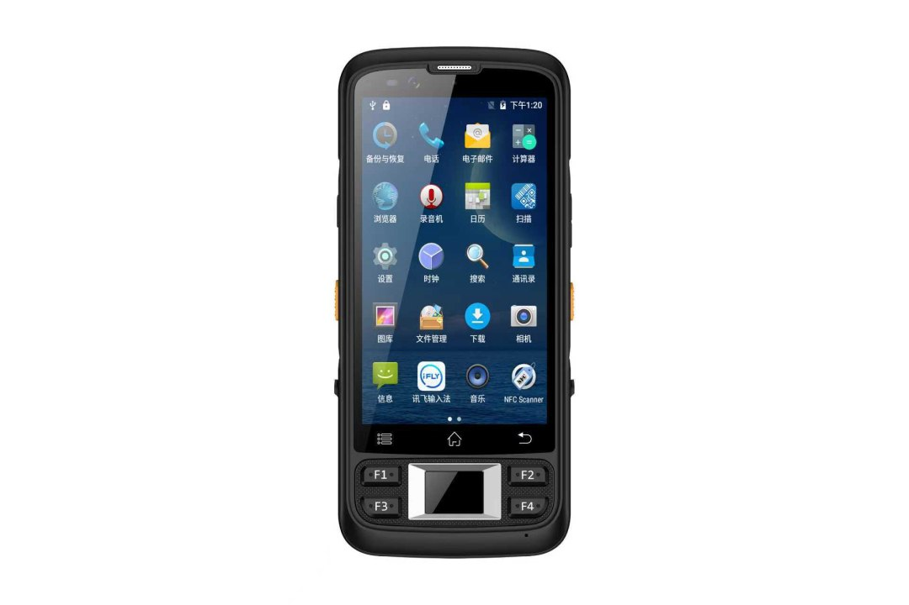

5-Inch Industrial Handheld PDA
A 242-gram Android mobile computer built around scanning — choose Honeywell, Zebra or Newland imagers, add UHF RFID or biometric modules, and deploy a fleet that survives the shift.
Why picking lines run on this class of device
- One-handed, all shift. 178 × 83 × 17 mm and 242 g — the difference between a device workers reach for and one they leave on the cart.
- Scan engines by name, not marketing: Honeywell HS7, Zebra SE4710 or Newland CM60/N1 — pick the decode profile your labels demand.
- Beyond barcodes: UHF/LF RFID (125K / 134.2K / 13.56 MHz), Ministry-certified fingerprint, offline ID card reading and embedded facial recognition — modules, not compromises.
- Android 12 with NFC standard (ISO/IEC 14443A, 1–3 cm) for badge login and asset tagging out of the box.
- Global-ready connectivity: full-band 4G LTE (B1/B3/B5/B7/B8/B20/B38–B41), dual-band WiFi and BeiDou/GPS/GLONASS.
Specifications
| Appearance | |
|---|---|
| Dimensions / Weight | 178 × 83 × 17 mm, ~242 g |
| Colour | Black |
| Display | |
| Screen | 5.72-inch LCD, 1440 × 720 |
| Touch | Multi-touch, Corning 3rd-gen tempered glass |
| Performance | |
| CPU | MTK 6765 octa-core 2.3 GHz |
| RAM / Storage | 3 GB + 32 GB (4 GB + 64 GB / 6 GB + 128 GB optional) |
| OS / NFC | Android 12.0 / ISO 14443A, 1–3 cm read range |
| Battery | |
| Capacity | 3.7 V / 4,000 mAh Li-polymer |
| Runtime | ~8 hours typical, >300 h standby |
| Connectivity | |
| Cellular | LTE B1/B3/B5/B7/B8/B20/B38/B39/B40/B41; WCDMA 1/2/5/8; GSM 2/3/5/8 |
| WiFi / BT | 802.11 b/g/n/a/ac dual-band / Bluetooth 4.0 (BLE) |
| Positioning | BeiDou / GPS / GLONASS |
| Data Capture | |
| Barcode | Honeywell HS7 / Zebra SE4710 / NLS CM60 / NLS N1 |
| RFID | 125K & 134.2K (1–3 cm); 13.56 MHz ISO14443A/B + 15693 (3–5 cm) |
| Biometric | Ministry-certified fingerprint module; embedded facial recognition; network-decrypted ID card; optional certified ID card reader |
| Camera | |
| Rear / Front | 13 MP autofocus with flash / 5 MP |
Typical deployments
Warehouse picking and cycle counting: the core use case — fast 2D decoding, one-handed operation, and an 8-hour battery matched to the shift.
Asset and livestock tracking: LF RFID options (125K/134.2K) cover ear tags and asset tags that 2D imagers cannot touch.
Identity and access workflows: certified fingerprint plus ID card reading in one unit — no second device for compliance checks.
Pairing guidance: run this PDA for scan-dense tasks alongside the 8-inch rugged tablet for paperwork-heavy stations — most of our warehouse customers deploy both.
OEM / ODM, factory direct
Boot logo, custom launcher, preloaded apps, region-specific LTE bands and module selection are all configured at the factory. Because we build the platform ourselves, module combinations (e.g. RFID + fingerprint together) get engineered rather than refused.
Frequently asked questions
Which scan engine should I choose?
Can it read RFID and scan barcodes in one unit?
Is the fingerprint module certified?
4,000 mAh sounds small — will it last?
Configure your fleet
Imager choice, RFID, biometrics, LTE bands and preloaded software — send us the workflow and we will return a build sheet with MOQ and lead time.